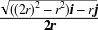

1Chapter 5. Collisions
7Before moving forward, we need to make a distinction between collision 7detection7 and collision 7response3456 . 8 3458Collision detection is a computational geometry problem involving the determination of whether and where two or more objects have collided. 10 3460Collision response is a kinetics problem involving the motion of two or more objects after they have collided. 3461 While the two problems are intimately related, we'll focus solely on the problem of collision response in this chapter. 13 Later, in 14Chapter 714 through 16Chapter 133465 , we'll show you how to implement collision detection and response in various real-time simulations, which draw upon concepts presented in this chapter.
3467Our treatment of rigid-body collision response in this chapter is based on classical (Newtonian) impact principles. 3468 Here, colliding bodies are treated as rigid irrespective of their construction and material. 3469 As in earlier chapters, the rigid bodies discussed here do not change shape even upon impact. 3470 This, of course, is an idealization. 3471 You know from your everyday experience that when objects collide they dent, bend, compress, or crumple. 3472 For example, when a baseball strikes a bat, it may compress as much as three-quarters of an inch during the millisecond of impact. 3473 Notwithstanding this reality, we'll rely on well-established analytical and empirical methods to approximate rigid-body collisions.
26This classical approach is widely used in engineering machine design, analysis, and simulations; however, for 27rigid-body simulations there is another class of methods, known 29as 29penalty methods3478 , at your disposal.30[31133481 ] In penalty methods, the force at impact is represented by a temporary spring that gets compressed between the objects at the point of impact. 3482 This spring compresses over a very short time and applies equal and opposite forces to the colliding bodies to simulate collision response. 3483 Proponents of this method say it has the advantage of ease of implementation. 3484 However, one of the difficulties encountered in its implementation is numerical instability. 3485 There are other arguments for and against the use of penalty methods, but we won't get into the debate here. 37 Instead, we've included several references in the 38Bibliography3488 for you to review if you are so inclined. 3489 Other methods of modeling collisions exist as well. 3490 For example, nonlinear finite element simulations are commonly used to model collisions during product design, such as the impact of a cellphone with the ground. 3491 These methods can be quite accurate; however, they are too slow for real-time applications. 3492 Further, they are overkill for games.
45Impulse-Momentum Principle
46Impulse is defined 3500as a force that acts over a very short period of time. 52 For example, the force exerted on a 3502bullet when fired from a gun is an impulse force. 3503 The collision forces between two colliding objects are impulse forces, as when you kick a football or hit a baseball with a bat.
3506More specifically, impulse is a vector quantity equal to the change in momentum. 58 The so-called 58impulse-momentum principle3507 says that the change in moment is equal to the applied impulse. 59 For problems involving constant 63mass and moment of inertia, you can write:
| 63Linear impulse = ȫ 63(t– to t+) 63F63 dt = m (63v63+63 – 63v63–63) |
| 63Angular impulse = ȫ 63(t– to t+) 63M63 dt = 63I63 (63ω63+63 – 63ω63–63) |
65In these equations, 65F65 is the impulsive force, 65M65 is the impulsive torque67 (or moment), 67t67 is time, 67v3516 is velocity, the subscript – refers to the instant just prior to impact, and the subscript + refers to the instant just after impact. 68 You can calculate the average impulse force and torque using the following equations:
| 68F68 = m (68v68+68 – 68v68–68) / (t68+68 – t68–68) |
| 68M68 = 68I68 (68ω68+68 – 68ω68–68) / (t68+68 – t68–68) |
| 76Average impulse force = (113.4 kg-m/s) / (0.0008 s) |
| 76Average impulse force = 141,750 N |
3527This is a simple but important illustration of the concept of impulse, and you'll use the same principle when dealing with rigid-body impacts. 3528 During impacts, the forces of impact are usually very high and the duration of impact is usually very short. 3529 When two objects collide, each applies an impulse force to the other; these forces are equal in magnitude but opposite in direction. 3530 In the gun example, the impulse applied to the bullet to set it in motion is also applied in the opposite direction to the gun, giving you a nice kick in the shoulder. 82 This is simply 3532Newton's third law in action.
88In addition to the impulse momentum principle discussed in the previous section, our classical impact, or 92collision response, analysis relies on another fundamental principle: Newton's principle of 96conservation of momentum, which states that when a system of 3546rigid bodies collide, momentum is conserved. 98 This means that for bodies of constant mass, the sum of their masses times their respective velocities before the impact is equal to the sum of their masses times their respective velocities after the impact:
| 98m98198v981–98 + m98298v982–98 = m98198v981+98 + m98298v982+ |
3552A crucial assumption of this method is that during the instant of impact the only force that matters is the impact force; all other forces are assumed negligible over that very short duration. 104 Remember this assumption, because in 105Chapter 103555 we'll rely on it when implementing collision response in an example 2D real-time simulation.
3557We've already stated that rigid bodies don't change shape during impacts, and you know from your own experience that real objects do change shape during impacts. 109 What's happening in real life is 110that 110kinetic energy110 is being converted to3561 strain energy to cause the objects to deform. 113 (See the sidebar 114Kinetic Energy3564 for further details on this topic.) When the deformation in the objects is permanent, energy is lost and thus kinetic energy is not conserved.
133Collisions that involve losses in kinetic energy are 137said to be 137inelastic137, or 137plastic3586 , collisions. 3587 For example, if you throw two clay balls against each other, their kinetic energy is converted to permanent strain energy in deforming the clay balls, and their collision response—that is, their motion after impact—is less than spectacular. 139 If the collision is 139perfectly inelastic3588 , then the two balls of clay will stick to each other and move together at the same velocity after impact. 140 Collisions where kinetic energy is conserved are called 140perfectly elastic3589 . 3590 In these collisions, the sum of kinetic energy of all objects before the impact is equal to the sum of kinetic energy of all objects after the impact. 142 A good example of elastic impact (though not 142perfectly3591 elastic) is the collision between two billiard balls where the ball deformation is negligible and certainly not permanent under normal circumstances.
| 147e = −(v1471+147 − v1472+147) / (v1471−147 − v1472−147) |
149Here 149e149 is known as the 149coefficient of restitution149 and 3600is a function of the colliding objects' material, construction, and geometry. 3601 This coefficient can be experimentally determined for specific impact scenarios—for example, the collision between a baseball and bat, or a golf club and ball. 153 For perfectly inelastic collisions, 153e153 is 0, and for perfectly elastic collisions, 153e3602 is 1. 154 For collisions that are neither perfectly inelastic nor perfectly elastic, 154e3603 can be any value between 0 and 1. 155 In this regard, the velocities considered are along the 155line of action155 of the 3605collision.
3608In frictionless collisions, the line of action of impact is a line perpendicular (or normal) to the colliding surfaces. 160 When the velocity of the bodies is along the line of action, the impact is said to be 160direct3609 . 161 163When the line of action passes through the center of mass of the bodies, the collision is said to 165be 165central3614 . 3615 Particles and spheres of uniform mass distribution always experience central impact. 167 167Direct central167 impact 3618occurs when the line of action passes through the centers of mass of the colliding bodies and their velocity is along the line of action. 170 When the velocities of the bodies are not along the line of action, the impact is said to 172be 172oblique3621 . 3622 You can analyze oblique impacts in terms of component coordinates where the component parallel to the line of action experiences the impact, but the component perpendicular to the line of action does not. 174 175Figure 5-13625 illustrates these impacts.
184As an example, consider the collision between two 187billiard balls illustrated in 188Figure 5-23638 .
3646Both balls are a standard 57 mm in diameter, and each weighs 156 grams. 3647 Assume that the collision is nearly perfectly elastic and the coefficient of restitution is 0.9. 199 If the velocity of ball 1 when it strikes ball 2 is 6 m/s in the x-direction, as shown in 200Figure 5-23650 , calculate the velocities of both balls after the collision assuming that this is a frictionless collision.
3652The first thing you need to do is recognize that the line of action of impact is along the line connecting the centers of gravity of both balls, which, since these are spheres, is also normal to both surfaces. 204 You can then write the unit normal vector as follows:
| 204n204 =  |
| 204n204 = (0.866) i – (0.5)j |
205where 205n205 is the unit normal vector, 205r205 is the ball radius, and 205i205 and 205j3654 represent unit vectors in the x- and y-directions, respectively.
3656Now that you have the line of action of the collision, or the unit normal vector, you can calculate the relative normal velocity between the balls at the instant of collision.
| 208v208rn208 = [208v2081–208 – 208v2082–208] • 208n |
| 208v208rn208 = [(6 m/s) 208i208 + (0 m/s) 208j208 ] • [ (0.864) 208i208 – (0.5) 208j208] |
| 208v208rn208 = 5.18 m/s |
209This will be used as 209v2091n–3658 in the following equations. 210 Notice here that since ball 2 is initially at rest, 210v2102–3659 is 0.
212Now you can apply the principle of conservation of momentum in the normal direction as follows:
| 212m2121212 v2121n–212 + m2122212 v2122n–212 = m2121212 v2121n+212 + m2122212 v2122n+ |
213Noting that 213m2131213 equals 213m2132213 since the balls are identical, and that 213v2132n–213 is 0, and then solving for 213v2131n+213 yields:
| 213v2131n+213 = v2131n–213 – v2132n+ |
214To actually solve for these velocities, you need to use the equation for coefficient of restitution and make the substitution for 214v2141n+3663 . 215 Then, you'll be able to solve for 215v2152n+3664 . 216 Here's how to proceed:
| 216e = (–v2161n+216 + v2162n+216) / (v2161n–216 – v2162n–216) |
| 216e v2161n–216 = –(v2161n–216 – v2162n+216) + v2162n+ |
| 216v2162n+216 = v2161n–216 (e + 1) / 2 |
| 216v2162n+216 = (5.18 m/s)(1.9) / 2 = 4.92 m/s |
217Using this result and the formula for 217v2171n+217 yields:
| 217v2171n+217 = 5.18 m/s – 4.92 m/s = 0.26 m/s |
3667Since the collision is frictionless, there is no impulse acting in the tangential direction. 3668 This means that momentum is conserved in that direction too and that the final tangential speed of ball 1 is equal to its initial tangential speed, which in this case is equal to 3 m/s (this equals (6m/s) sin 30°). 3669 Since ball 2 had no initial tangential speed, its velocity after impact is solely in the normal direction. 221 Converting these results back to 221x221-221y221 coordinates instead of normal and tangential coordinates yields the following velocities for each ball after impact:
| 221v2212+221 = (4.92 m/s) sin 60° 221i221 – (4.92 m/s) cos 60 ° 221j |
| 221v2211+221 = [(0.26 m/s) cos 30° + (3 m/s) sin 30°] 221i221 + |
| 221+ [(−0.26 m/s) sin 30° + (3 m/s) cos 30°)] 221j |
| 221v2211+221 = (1.72 m/s) 221i221 + (2.47 m/s) 221j |
222To further 225illustrate the application of these collision response principles, consider another example, this time the collision between a 228baseball bat and baseball (as shown in 229Figure 5-33679 ). 3680 We are looking at a side view, staring down the barrel of the bat.
3688To a reasonable degree of accuracy, the motion of a baseball bat at the instant of collision can generally be described as independent of the batter—in other words, you can assume that the bat is moving freely and pivoting about a point located near the handle end of the bat. 240 Assume that the ball strikes the bat on the sweet spot—that is, a point near the3691 center of percussion.243[244143694 ] Further assume that the bat is swung in the horizontal plane and that the baseball is traveling in the horizontal plane when it strikes the bat. 3695 The bat is of standard dimensions with a maximum diameter of 70 mm and a weight of 1.02 kg. 3696 The ball is also of standard dimensions with a radius of 37 mm and a weight of 0.15 kg. 3697 The ball reaches a speed of 40 m/s (90 mph) at the instant it strikes the bat, and the speed of the bat at the point of impact is 31 m/s (70 mph). 3698 For this collision, the coefficient of restitution is 0.46. 3699 In the millisecond of impact that occurs, the baseball compresses quite a bit; however, in this analysis assume that both the bat and the ball are rigid. 3700 Finally, assume that this impact is frictionless.
253As in the previous example, the line of action of impact is along the line connecting the 255centers of gravity of the bat and ball; thus, the unit normal vector is:
255n255 = 
|
| 255n255 = (0.875) 255i255 + (0.484) 255j |
3706Here the subscripts 1 and 2 denote the bat and ball, respectively.
260The relative normal velocity between the bat and ball is:
| 260v260rn260 = [260v2601−260 − 260v2602−260] • 260n |
| 260v260rn260 = [(71 m/s) 260i260 + (0 m/s) 260j260 ] • [ (0.875) 260i260 − (0.484) 260j260] |
| 260v260rn260 = 62.1 m/s |
262The velocity components of the bat and ball in the normal direction are:
| 262v2621n−262 = 262v2621−262 • 262n262 = 27.1 m/s |
| 262v2622n−262 = 262v2622−262 • 262n262 = −35.0 m/s |
264Applying the principle of conservation of momentum 270in the normal direction and solving for 270v2701n+270 yields:
| 270m2701270 v2701n−270 + m2702270 v2702n−270 = m2701270 v2701n+270 + m2702270 v2702n+ |
| 270(1.02 kg) (27.1 m/s) + (0.15 kg) (−35.2 m/s) = |
| 270=(1.02 kg) v2701n+270 + (0.15 kg) v2702n+ |
| 270v2701n+270 = 21.92 m/s − (0.14 m/s) v2702n+ |
272As in the previous example, applying the formula for coefficient of restitution273 with the preceding formula for v2731n+273 yields:
| 273e = (−v2731n+273 + v2732n+273) / (v2731n−273 − v2732n−273) |
| 2730.46 = [−21.92 m/s + (0.14 m/s) v2732n+273 + v2732n+273] / [27.1 m/s + 35.2 m/s] |
| 273v2732n+273 = 44.4 m/s 273and273 v2731n+273 = 15.7 m/s |
276Here again, since this impact is frictionless, each object retains its original 3727tangential velocity component. 3728 For the bat, this component is 15 m/s, while for the ball it's −19.3 m/s. 280 Converting these normal and tangential components to 280x280-280y280 coordinates yields the following bat and ball velocities for the instant just after impact:
| 280v2801+280 = 21.0 m/s 280i280 − 5.5 m/s 280j |
| 280v2802+280 = 30 m/s 280i280 + 38.7 m/s 280j |
3731Both of these examples illustrate fundamental impact analysis using the classical approach. 3732 They also share an important assumption—that the impacts are frictionless. 284 In reality, you know that billiard balls and baseballs and bats collide with friction; otherwise, you would not be able to apply 284English3733 in billiards or create lift-generating spin on baseballs. 285 Later in this chapter we'll discuss how to include friction in your impact3740 analysis.
296In the previous 3751section, you were able to work through the specific examples by hand using the principle of conservation of momentum and the coefficient of restitution. 3752 This approach will suffice if you're writing games where the collision events are well defined and anticipated. 3753 However, if you're writing a real-time simulation where objects, especially arbitrarily shaped rigid bodies, may or may not collide, then you'll want to use a more general approach. 3754 This approach involves the use of formulas to calculate the actual impulse between colliding objects so that you can apply this impulse to each object, instantly changing its velocity. 306 In this section, we'll derive the equations for impulse, both linear and angular, and we'll show you how to implement these equations in code in 307Chapter 103757 .
3759When you're dealing with particles or spheres, the only impulse formula that you'll need is that for linear impulse, which will allow you to calculate the new linear velocities of the objects after impact. 311 So, the first formula that we'll derive for you is that for linear impulse between two colliding objects, as shown in 312Figure 5-43762 .
| 326|326J326| = m (|326v326+326| − |326v326−326|) |
| 326e = −(|326v3261+326| − |326v3262+326|)/(|326v3261−326| − |326v3262−326|) |
| 329|329J329| = m3291329 (|329v3291+329| − |329v3291−329|) |
| 329|329−J329| = m3292329 (|329v3292+329| − |329v3292−329|) |
| 329e = −(|329v3291+329|− |329v3292+329|)/(|329v3291−329| − |329v3292-329|) |
| 335For body 1: |335v3351+335| = |J|/m3351335 + |335v3351–335| |
| 335For body 2: |335v3352+335| = –|J|/m3352335 + |335v3352–335| |
337Substituting |337v3371+337| and |337v3372+337| into the equation for 337e337 yields:
| 337e (|337v3371–337| – |337v3372–337|) = –[( |337J337|/m3371337 + |v3371–337|) – (–|337J337|/m3372337 + |v3372–337|)] |
| 337e (|337v3371-337| – |337v3372–337|) + |337v3371–337| – |337v3372–337| = –J (1/m3371337 + 1/m3372337) |
339Let |339v339r339| = (|339v3391–339| – |339v3392–339|); then:
| 339e |339v339r339| + |339v339r339| = –|339J339| (1/m3391339 + 1/m3392339) |
| 339|339J339| = –|339v339r339|(e + 1)/(1/m3391339 + 1/m3392339) |
| 345v3451+345 = 345v3451–345 + (|345J345| 345n345)/m3451 |
| 345v3452+345 = 345v3452–345 + (–|345J345| 345n345)/m3452 |
3799When dealing with rigid bodies that rotate, you'll have to derive a new equation for impulse that includes angular effects. 3800 You'll use this impulse to calculate new linear and angular velocities of the objects just after impact. 352 Consider the two objects colliding at point 352P352, as shown in 353Figure 5-53803 .
3811There's a crucial distinction between this collision and that discussed earlier. 363 In this case, the velocity at the point of contact on each body is a function of not only the objects' linear velocity but also their angular velocities, and you'll have to recall from 364Chapter 2364 the following formula in order to calculate the velocities at the impact point on each body:
| 364v364p364 = 364v364g364 + (364ω364 × 364r364) |
366In this relation, 366r366 is the vector from the body's center of gravity to the point 366P3815 .
368Using this formula, you can rewrite the two formulas relating the linear velocity after impact to the impulse and initial velocity as follows:
| 368For body 1: 368v3681g+368 + (368ω3681+368 × 368r3681368) = 368J368/m3681368 + 368v3681g–368 + (368ω3681–368 × 368r3681368) |
| 368For body 2: 368v3682g+368 + (368ω3682+368 × 368r3682368) = –368J368/m3682368 + 368v3682g–368 + (368ω3682–368 × 368r3682368) |
3818There are two additional unknowns here, the angular velocities after impact, which means that you need two additional equations. 370 You can get these equations from the definition of angular impulse:
| 370For body 1: (370r3701370 × 370J370) = 370I3701370 (370ω3701+370 – 370ω3701–370) |
| 370For body 2: (370r3702370 × –370J370) = 370I3702370 (370ω3702+370 – 370ω3702–370) |
3820Here we calculate the moment due to the impulse by taking the vector cross product of the impulse with the distance from the body's center of gravity to the point of application of the impulse.
373By combining all of these equations with the equation for 373e373 and following the same procedure used when deriving the linear impulse formula, you'll end up with a formula for |373J3822 | that takes into account both linear and angular effects, which you can then use to find the linear and angular velocities of each body immediately after impact. 374 Here's the result:
| 374|374J374| = –(374v374r374• 374n374)(e + 1)/[1/m3741374 + 1/m3742374 + 374n374 •((374r3741374 × 374n374)/374I3741374) × 374r3741374 + 374n374 • ((374r3742374 × 374n374)/374I3742374) × 374r3742374] |
375Here 375v375r375 is the relative velocity along the line of action at the impact point 375P375, and 375n3824 is a unit vector along the line of action at the impact point pointing out from body 1.
377With this new formula for |377J377|, you can calculate the change in linear and angular velocities of the objects involved in the collision using these formulas:
| 377v3771+377 = 377v3771−377 + (|377J377| 377n377)/m3771 |
| 377v3772+377 = 377v3772−377 + (−|377J377| 377n377)/m3772 |
| 377ω3771+377 = 377ω3771−377 + (377r3771377 × |377J377| 377n377)/377I3771 |
| 377ω3772+377 = 377ω3772−377 + (377r3772377 × −|377J377| 377n377)/377I3772 |
378As we said earlier, we'll show you how to implement these formulas for 384impulse in code when you get to 385Chapter 103835 .
388Friction
389Friction acts between 3840contacting surfaces to resist motion. 3841 When objects collide in any type of collision except direct impact, for that very brief moment of contact, they will experience a friction force that acts tangentially to the contacting surfaces. 3842 Not only will this tangential force change the linear velocities of the colliding objects in the tangential direction, but it will also create a moment (torque) on the objects, which tends to change their angular velocities. 3843 This tangential impulse combined with the normal impulse results in an effective line of action of the total collision impulse that is no longer perpendicular to the contacting surfaces.
| 401µ401k401 = F401f401 / F401n |
407Consider the collision between the 410golf club head and golf ball illustrated in 411Figure 5-63861 .
427The lower force diagram in 428Figure 5-63878 illustrates the forces involved in this collision with friction. 3879 Since the ratio of the tangential friction force to the normal collision force is equal to the coefficient of friction, you can develop an equation relating the angle φ to the coefficient of friction.
| 431tan φ = F431f431 / F431n431 = µ |
3881In addition to this friction force changing the linear velocity of the ball in the tangential direction, it will also change the angular velocity of the ball. 3882 Since the friction force is acting on the ball's surface some distance from its center of gravity, it creates a moment (torque) about the ball's center of gravity, which causes the ball to spin. 434 You can develop an equation for the new angular velocity of the ball in terms of the normal impact force or impulse:
| 434Σ M434cg434 = F434f434 r = I434cg434 dω/dt |
| 434µ F434n434 r = I434cg434 dω/dt |
| 434µ F434n434 r dt = I434cg434 dω |
| 434ȫ434(t– to t+)434 F434n434 dt = I434cg434 / (µ r) ȫ434(ω– to ω+)434 ω dω |
435Notice here that the integral on the left is the normal impulse; thus:
| 435Impulse = I435cg435 / (µ r) (ω435+435 – ω435–435) |
| 435ω435+435 = (Impulse) (µ r) / I435cg435 + ω435– |
436This relation looks very similar to the 3888angular impulse equation that we showed you earlier in this chapter, and you can use it to approximate the friction-induced spin in specific collision problems.
| 443|443J443| = –(443v443r443• 443n443)(e + 1) / [1/m4431443 + 1/m4432443 + 443n443 •((443r4431443 × 443n443)/443I4431443) × 443r4431443 + 443n443 • ((443r4432443 × 443n443)/443I4432443) × 443r4432443] |
| 447v4471+447 = 447v4471–447 + (J 447n447 + (µ J) 447t447) / m4471 |
| 447v4472+447 = 447v4472–447 + (–J 447n447 + (µ J) 447t447) / m4472 |
| 447ω4471+447 = 447ω4471–447 + (447r4471447 × (J 447n447+ (µ J) 447t447)) / 447I447cg |
| 447ω4472+447 = 447ω4472–447 + (447r4472447 × (–J 447n447+ (µ J) 447t447)) / 447I447cg |
| 451t451 = (451n451 × 451v451r451) × 451n |
| 451t451 = 451t451 / |451t451| |
3902For many problems that you'll face, you may be able to reasonably neglect friction in your collision response routines since its effect may be small compared to the effect of the normal impulse itself. 3903 However, for some types of problems, friction is crucial. 3904 For example, the flight trajectory of a golf ball depends greatly on the spin imparted to it as a result of the club–ball collision. 456 We'll discuss how spin affects trajectory in the next chapter, which covers projectile 3910motion.
467[468133918 ] We use the classical approach in this book and are mentioning penalty methods only to let you know that the method we're going to show is not the only one. 470 Roughly speaking, the 470penalty470 in 470penalty methods3919 refers to the numerical spring constants, which are usually large, that are used to represent the stiffness of the springs and thus the hardness (or softness) of the colliding bodies. 3920 These constants are used in the system of equations of motion describing the motion of all the bodies under consideration before and after the collision.
473[47414474] 3924The center of percussion is a point located near one of the nodes of natural vibration, and is the point at which, when the bat strikes the ball, no force is transmitted to the handle of the bat. 3925 If you've ever hit a baseball incorrectly such that you get a painful vibrating sensation in your hands, then you know what it feels like to miss the center of percussion.